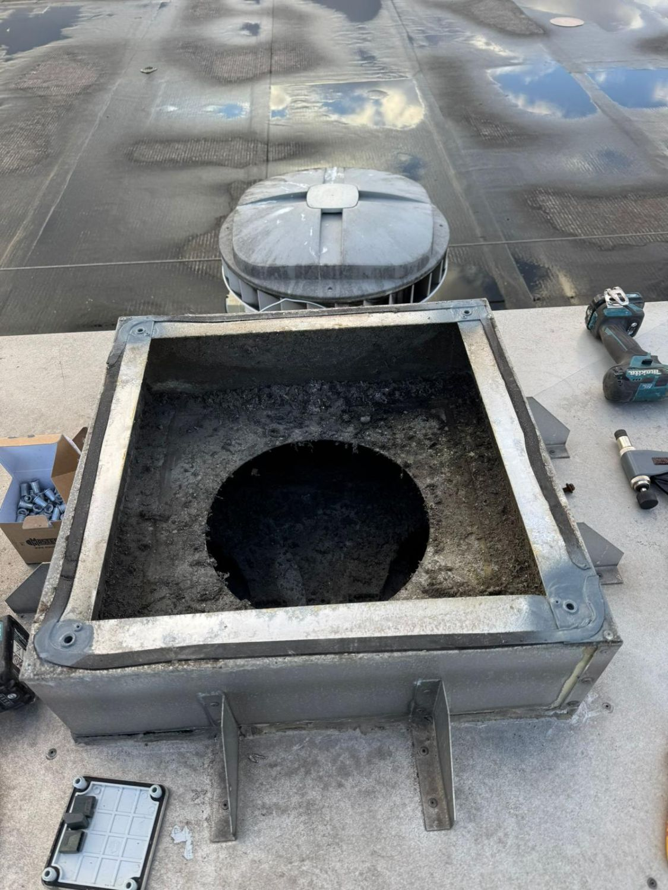
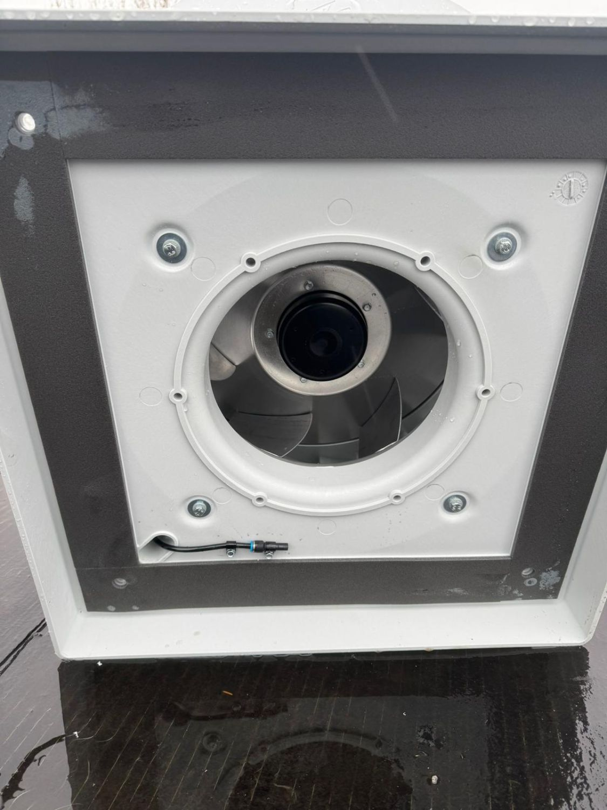
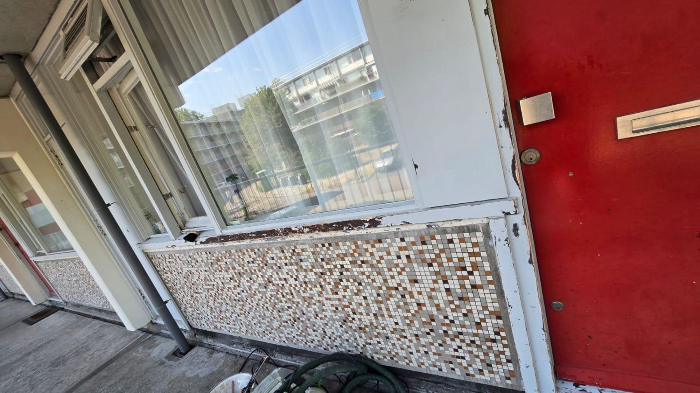

Schilderwerk
Onze experts repareren en vernieuwen houten dakconstructies, boeidelen en gevelbekleding, om de duurzaamheid en uitstraling van uw pand te behouden.
10Dak- en gevelonderhoud
Tijdens

Wij geloven in onze slogan “Elk project doet er toe”, wat betekent dat we elk project, groot of klein, met dezelfde toewijding en aandacht behandelen.
Wij bieden een breed aanbod aan van projectmatige installaties tot het beheren en onderhouden van bedrijfspanden.
Onze experts repareren en vernieuwen houten dakconstructies, boeidelen en gevelbekleding, om de duurzaamheid en uitstraling van uw pand te behouden.
10Dak- en gevelonderhoudWij verzorgen installaties van elke schaal, van woningen tot kantoren en loodsen. Of het nu gaat om kleine installaties of grote projecten, wij leveren altijd vakmanschap.
01Installatietechniek

Van kleine renovaties zoals schilderwerk en het vervangen van vloeren tot complete aanpassingen van keukens en badkamers – wij zorgen voor een snelle en hoogwaardige uitvoering.
09Mutaties & renovaties
Onze timmermannen staan klaar om snel in te springen bij reparaties, zoals het verhelpen van lekkages en het herstellen van houtrot, deuren en kozijnen.
Wij inspecteren en herstellen houtrot in kozijnen, ramen en deuren, zodat uw pand in goede staat blijft.
Onze specialisten lossen storingen snel en vakkundig op, en voeren preventief onderhoud uit om uw installaties in topconditie te houden.
Met meer dan 1000 succesvolle installaties van intercomtoestellen, zijn wij dé experts op het gebied van intercomsystemen. Of het nu gaat om het vervangen van bestaande systemen of het implementeren van nieuwe oplossingen, wij zorgen voor een vlekkeloze installatie.
Bij een recent project in een loods van 4500 m² hebben wij 1000 meter lichtlijn gemonteerd, inclusief het opstellen van een compleet lichtplan. Daarnaast hebben we in diverse complexen meer dan 1500 armaturen vervangen, waardoor zowel de energie-efficiëntie als de verlichting sterk is verbeterd.
Voor een luxe appartement hebben wij, in nauwe samenwerking met de architect, de elektrische installaties compleet vernieuwd en geavanceerde domotica geïmplementeerd. Het resultaat is een perfecte balans tussen moderne technologie en elegantie, volledig afgestemd op de wensen van de klant.
Wij hebben de volledige installatie van een zwevende villa verzorgd, inclusief domotica-oplossingen die de moderne levensstijl van de klant ondersteunen. Daarnaast hebben we voor een project met 10 appartementen de complete elektrovoorzieningen gerealiseerd, waarbij functionaliteit en design hand in hand gingen.
Neem vandaag nog contact met ons op! Ons team staat klaar om u te ontzorgen en elk aspect van uw installatie- of onderhoudsbehoeften met de hoogste zorg en professionaliteit aan te pakken.